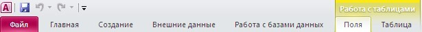
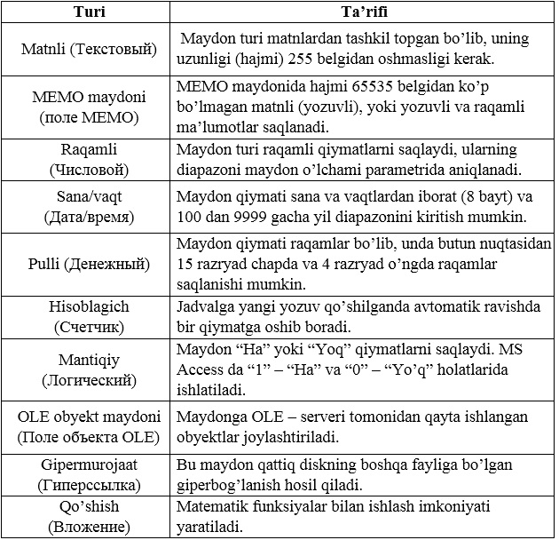
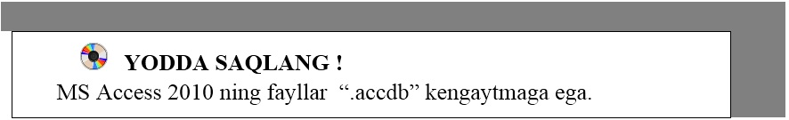

23-DARS. MS ACCESS 2010 NING ASOSIY ELEMENTLARI VA MAYDONLAR XUSUSIYATI
Microsoft Access 2010 MOBTning relyatsion turiga mansub bo’lib, hozirgi vaqtda eng ommaviy ma’lumotlar omborini boshqarish tizimlariga kiradi va u MOni yaratish, MOda ma’lumotlarni saqlash, izlash va ishlashni avtomatlashtirishga mo’ljallangan.
MS Access 2010 ning yana bir qo’shimcha afzalligi uning Microsoft Office tarkibiga kiruvchi Word, Excel kabi dasturlar bilan integrallashganligidadir. Bu dastur ilovalarida yaratilgan ma’lumotlar bir ilovadan ikkinchi ilovaga osonlik bilan import va eksport bo’lishi ko’zda tutilgan.
MS Access 2010 yordamida oddiy foydalanuvchi katta va murakkab bo’lgan ma’lumotlar omborini dasturiy ta’minot yaratmasdan MO yaratish va qo’llashga ega bo’ladi.
MS Access 2010 ni yuklashning uch xil usulini ko’rib o’tish mumkin:
• foydalanuvchining ish stolidagi yorliq yordamida;
• dasturining yorlig’i yordamida;
• bosh menyu yordamida.
MS Access 2010 bilan ishlash
MS Access 2010 ning ekrani yuqori qatorida omboridagi ma’lumotlar va uning qismlari ustida turli xil amallar bajarish uchun mo’ljallangan menyu joylashgan.
Файл, Главная, Создание, Внешние данные, Работа с базами данных, Поля, Таблица bo’limlaridan iborat.

Файл – ma’lumotlarni xotirada saqlash, fayllarga murojaat qilish, ma’lumotlarni qog’ozga chop etish, dasturning parametrlarini sozlash imkoniyatlari mavjud.
Главная –jadvaldagi ma’lumotlarni filtrlash, saralash qayta ishlash, kabi bir qator ishlarini amalga oshirish imkoniyati mavjud.
Создание – jadvallar, so’rovlar, formalar hisobotlar, modullar, makroslar yaratish kabi bir qator ishlarni amalga oshirish mumkin.
Внешние – yaratilgan ma’lumotlarni import, eksport, qilish va ma’lumotlarni elektron manzillarga jo’natish kabi bir qator ishlarni amalga oshirish mumkin.
Работа с базами данных – makroslar yaratish, hosil qilingan jadvallarni o’zaro bog’lash, SQL server ombori bilan bog’lash kabi bir qator ishlarni amalga oshirish mumkin.
Поля – maydon turlari, xossalarini o’zgartirish, jadval formatlarini tahrirlash, matematik funksiyalardan foydalanish mumkin.
Таблица – makroslar yaratish, jadvllarni o’zaro bog’lash, xossa-larini o’rnatish mumkin.
MS Access 2010 ning asosiy elementlari quyidagilar:
• Таблицы – ma’lumotlarni saqlash uchun xizmat qiladi;
• Запросы – ma’lumotlarni tanlash shartlarini berishni ularga o’zgartirishlar kiritish uchun xizmat qiladi;
• Формы – ma’lumotlarni ko’rish va tahrirlash uchun xizmat qiladi;
• Страницы – HTML (gipermatn) formatidagi fayllar, ular MS
• Access 2010 da ma’lumotlarini Internet Explorer brouzeri yordamida ko’rish uchun ishlatiladi;
• Отчеты – ma’lumotlarni umumlashtirish va chop qilish imkonini beradi;
• Макрос – bir yoki bir qancha amallarni avtomatik ravishda bajaradi. MS Access 2010 da maydonlar ma’lumotlarni mantiqiy tashkil etishning elementar birligi hisoblanadi.
MS Access 2010 da tasvirlanadigan maydon turlari



1. MS Access 2010 da MOBTning qaysi turga mansub?
2. MS Access 2010 da obyektlarning asosiy elementlarini tushuntirib bering?
3. MS Access 2010 da maydon turlari haqida ma’lumot bering?
4. MS Access 2010 ni ishga tushiring va uning asosiy oynasida yangi ma’lumotlar omborini (Новая база данных) yarating.

1. MS Access 2010 da yangi ma’lumotlar omborini hosil qiling. Ombor nomini “o’quvchilar” deb nomlang va uni D diskga saqlang.
2. MS Access 2010 da tasvirlanadigan maydon turlarini tahlil qilib chiqing.